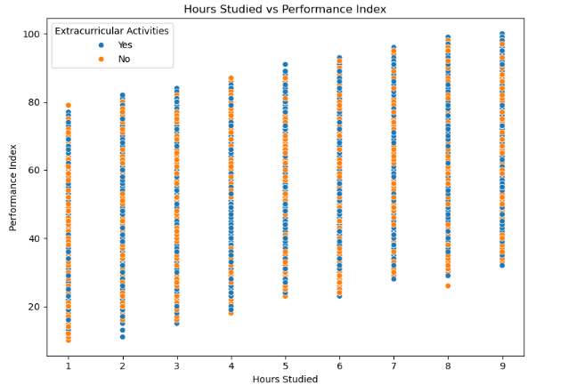
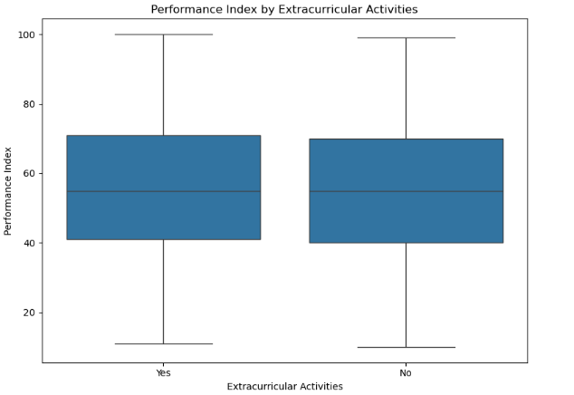

Student Performance Analysis
Introduction to the Problem and Dataset
In this project, the objective is to develop a regression model to predict student academic performance, represented by a numerical Performance Index. Accurately predicting performance can help educators and academic advisors identify students who may need additional support, enabling timely interventions to improve academic outcomes. The dataset used is a realistic synthetic dataset named Student_Performance.csv, consisting of 10,000 student records. Each record contains the following features:
- Hours Studied – Number of hours the student studies per day
- Previous Scores – Student’s scores from prior academic assessments
- Extracurricular Activities – Whether the student participates in extracurricular activities (Yes/No)
- Sleep Hours – Average number of hours the student sleeps per night
- Sample Question Papers Practiced – Number of sample papers the student has practiced
- Performance Index – Target variable representing overall academic performance, ranging from 10 to 100
This is framed as a regression problem where the goal is to use these features to accurately predict the continuous value of the Performance Index.
What is Regression and How Does It Work?
Regression is a statistical method of modeling the relationship between an independent variable and a dependent variable, and between one or more independent variables and a dependent variable. The simplest, linear regression, models a linear relationship between predictors and a response variable. It estimates coefficients for each input feature that quantify their effect on the target variable. The linear regression formula is:
Y = β0 + β1X1 + β2X2 + ... + βnXn + ε
where Y is the predicted value, β0 is the intercept, β1 to βn are the coefficients of the features X1 to Xn, and ε represents the error term.
Experiment 1
Data Understanding
To better understand the dataset before building a model, we created the following visualizations:
1. Hours Studied vs Performance Index
This scatter plot shows a clear positive relationship between hours studied and the performance index. Students who study more tend to achieve higher performance scores. Additionally, students involved in extracurricular activities are highlighted, showing that although both groups can perform well, high scorers often put in more study hours.

2. Performance Index by Extracurricular Activities
This box plot compares the distribution of performance scores for students based on their involvement in extracurricular activities. While both groups have overlapping performance ranges, those not involved in activities tend to have a slightly higher median performance, possibly due to more available study time. However, the variation shows that high performance is still achievable in both cases.

Pre-processing
Pre-processing involved several key steps: encoding the categorical 'Extracurricular Activities' variable from 'Yes'/'No' to '1'/'0', normalizing the scale of continuous variables to prevent model bias towards variables with larger scales, and handling missing values, although this dataset was free of such issues. These steps ensure that the data is clean and formatted correctly for modeling.
Modeling
To build our first predictive model, we implemented a Linear Regression algorithm using the LinearRegression class from the scikit-learn library. Linear regression is a foundational machine learning technique that models the relationship between a dependent variable and one or more independent variables by fitting a linear equation to the observed data. In this case, our dependent variable is the Performance Index, and the independent variables include factors like Hours Studied, Previous Scores, Sleep Hours, Sample Question Papers Practiced, and Extracurricular Activities (numerically encoded). We split the dataset into training (80%) and testing (20%) sets to ensure the model generalizes well to unseen data. The model was then trained using the training set by minimizing the residual sum of squares between the observed and predicted values.
Evaluation
The model was evaluated using the Root Mean Squared Error (RMSE) metric, which measures the average magnitude of the prediction errors. A lower RMSE indicates a better-fitting model. In this initial experiment, the linear regression model achieved an RMSE of approximately 2.02. This relatively low error suggests that the model performs well in predicting student performance based on the given features. These results provide a strong baseline for further model improvement through feature engineering or alternative regression techniques in future experiments.
Experiment 2
In the second experiment, we aimed to improve the model by removing the Sleep Hours feature, which showed low correlation with the target variable. The hypothesis was that excluding irrelevant or weakly correlated features might reduce noise and improve prediction performance. We retrained the linear regression model using the reduced feature set and evaluated it with the same train/test split. However, the RMSE slightly increased to 2.18, suggesting that even though Sleep Hours appeared weakly correlated, it still contributed marginally to model accuracy when combined with other features.
Experiment 3
For the third experiment, we explored a more advanced machine learning model, the Random Forest Regressor. Random Forest is an ensemble method that combines multiple decision trees to make predictions and is known for handling non-linear relationships well. We used all features in this model and evaluated it using the same test split. Interestingly, the RMSE increased to 2.27, slightly worse than both linear regression models. This result could stem from the Random Forest's complexity not offering additional benefits for this relatively simple and clean dataset, or possibly from redundancy among input features. Despite this, the experiment demonstrated the value of testing more complex models, even if they don't always outperform simpler baselines.
Impact Section
This project has important social and ethical impact. On the positive side, student performance prediction has the potential to help teachers identify poorly performing students early and provide targeted intervention to improve academic outcomes. There are also ethical risks. Predictive models, when inappropriately applied, can lead to bias, stereotyping, or discrimination against students. For example, students who are labeled "low-performing" could be denied opportunities to which they are entitled. Therefore, it's crucial that such models are implemented with transparency, fairness, and human oversight in schools.
Conclusion
This project provided valuable insights into the process of building, testing, and evaluating regression models. We saw that even minor preprocessing decisions, such as removing a feature, can affect model performance. While the linear regression model performed best overall, experimenting with feature selection and trying a Random Forest model reinforced the importance of iterative testing. Most importantly, we learned that simpler models can sometimes outperform more complex ones depending on the data. This reinforces the idea that machine learning isn't just about choosing powerful algorithms, it's also about understanding your data and choosing the right tools.
References
- To explore the process further, you can access my Jupyter Notebook HERE.